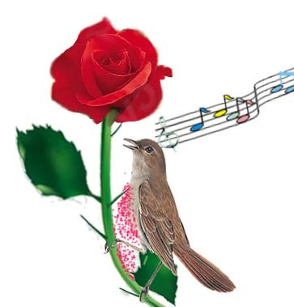

夜鶯與玫瑰 譯者江銘輝
一隻飛離她河邊橡樹愛巢的夜鶯聽到這個年輕人的話。她好奇的目光穿過層層的樹葉望著。
「我的花園裏沒有紅玫瑰!」年輕人叫著；他那美麗的雙眼充滿淚水。
「哎!我的幸福竟取決於這件小事情。我遍讀聖賢書，洞悉宇宙哲學的奧祕;然而，只一朵紅玫瑰，竟使我一生變成這樣可憐。」
「哇，終於出現了一個真情真意的有情人了，」夜鶯說著，「一夜又一夜，我對這種人歌頌；一夜繼一夜，我對群星講述他的故事，現在，我竟然真的碰上這樣的人。哇!這個年輕人的頭髮黑如風信子花，雙唇如同他想要的紅玫瑰般鮮紅；只是，戀情使得他的臉色像象牙般的蒼白，眉間盡是憂鬱的神色。」
「王子將於明天晚上舉辦一場舞會，」年輕學生喃喃自語，「並且它將帶給我愛，如果我能送給地一朵紅玫瑰，她就答應當我的舞伴，和我跳到黎明。如果我能送給她一朵紅玫瑰，我就可以擁她入懷，讓她的頭倚在我的肩上;同時她的手也會緊著我的手。可是，我的花園沒有紅玫瑰阿！我只好孤單坐著，看著她從我眼前走過。她看也不看我，此時我的心都破碎了。」
「阿！他真是個有情人。」夜鶯說道；「當我在歌頌愛情的時候。他卻正為愛情所苦；我嚮往的愛情，竟是他的痛苦。的確，愛情是奇妙的東西。它比翡翠還要珍貴，比純正的貓眼石還值錢。即便用珍珠和石榴也買不到它，而且它也不會被當成商品在市場出售。也不能用黃金的重量來衡量。」
樂師們將坐在演奏席上並彈奏樂器，」年輕的學生說道，「而我的愛人將隨著豎琴和小提琴的樂聲婆娑起舞。她曼妙輕盈地舞著彷彿腳尖不著地般，環繞一群穿著華麗衣著的仰慕者，至於我，若不能送她一朵紅玫瑰，她就不答應與我跳舞!」他將身體撲到草坪上，雙手掩著臉哭泣。
「他為什麼哭泣?」一隻綠色的小蜥蜴蹺著尾巴跑過學生身旁時問道。
「的確，為什麼？」一隻正拍著翅膀在陽光下飛翔的蝴蝶說。
「是啊，為什麼？」一朵小雛菊輕柔地對它的鄰居耳語道。
「他為了一朵紅玫瑰而哭。」夜鶯回答說。
「為一朵紅玫瑰？」大夥兒叫道；「多麼可笑！」愛諷刺的小蜥蜴誇當場笑著。但是夜鶯知道學生悲傷的秘密，她靜靜地坐在橡樹上，細細地思索愛情的奧秘。
突然間，她伸展開棕色的翅膀，飛起來。飛上天空，她像一道影子，飛過小叢林，像一道影子，飛過花園。
在花園中央的一塊草叢裏有一株美麗的玫瑰樹，飛在上空中的夜鶯瞧見了，點燃一道靈感。
「請給我一朵紅玫瑰，」夜鶯大聲說道，「我將為你唱一首最甜美的歌。」
然而這個棵卻搖搖頭。
「我是白玫瑰，」它回答道;「潔白如海中的泡沫，潔白勝過山上的雪。去找我弟弟吧，它就繞著老日晷儀生長，也許它可以給你一朵紅玫瑰。」
於是，夜鶯飛到繞著老日晷生長的那株玫瑰那兒。
「請給我一朵紅玫瑰，」夜鶯大聲道，「我將為你唱一首最甜美的歌。」
然而，這株玫瑰也搖搖頭。
「我是黃玫瑰，」它答道:「黃如坐在琥珀王座上美人魚的秀髮，黃得比田野上未割刈的水仙花還黃。去找我弟弟吧，它就長在那個青年學生的窗下，也許它可以給你一朵紅玫瑰。」
於是，夜鶯飛到生長在那位學生窗下的玫瑰前。
「請給我一朵紅玫瑰，」夜鶯大聲說道，「我將為你唱一首最甜美的歌。」
然而，這株仍然玫瑰搖搖頭。
「我是紅玫瑰沒錯，」它答道；「紅如鴿子的雙腳，也紅得勝過深海中珊瑚的大枝幹。然而，隆冬的嚴寒凍僵了我的葉脈，冰霜摧殘了我的花苞，暴風雨打傷了我的樹幹，我看，今年我是開不出花來了。」
「我只要一朵紅玫瑰而已，」夜鶯哭喊道;「只要一朵紅玫塊就好!有沒有什麼方法可以讓我得到它?」
「有一個辦法，」這株玫瑰回答:「不過太可怕了，我不敢告訴妳。」
「告訴我吧，」夜鶯答道;「我不怕的。」
「如果妳想要一朵紅玫瑰，」這株玫瑰說道；「妳得在月光下用歌聲來培育它，而且要用妳心臟裏的血液染它。妳必須邊唱歌給我聽，邊把妳的胸膛刺進我的荊棘。整夜對我歌唱，且讓我的荊棘刺進妳的心臟，使妳的血液流進我的葉脈中，變成我的血液。」
「為得到一朵紅攻塊，必須以死亡為報償，這代價真大，」夜鶯說道;「對一切生物來說，生命都是最寶貴的。能夠坐在綠意盎然的樹林裏，看著駕駛黃金馬車的太陽和駕駛珍珠馬車的月亮是多麼娛樂的事。山楂的味道那麼美味，山谷中潛藏的藍色鐘形花和山坡上的石南是那麼美。然而，愛情卻比生命還可貴，而且，一顆鳥類的心怎麼比得上人類的一顆心呢?」
因此她展開棕色的羽翼飛起來，飛入天空。她像一道影子似地飛過花園，像一道影子似地掠過叢林。
那個年輕的學生仍然躺在那塊她剛飛離的草地上，美麗的雙眼仍浸潤著未乾的淚珠。
「快樂吧，」夜鶯大聲說道；「快樂吧；你將有紅玫瑰了。我會在月夜下用歌聲培育它。而且用我心臟裏的血液滋潤它。一切我要你回報是，你要做一位真心的有情人，因為愛情比哲學更具智慧（雖然哲學是有智慧的），比強權更具力量（雖然強權就是力量）。絢爛的愛情是他翅膀，火焰般的熱情是他身體。他的雙唇甜美如蜜，氣息似乳香。」
年輕的學生從草地抬起頭來往上瞧，注意聽著，但是他卻聽不懂夜鶯對他講的話，因為他只懂得書上寫的東西。
然而，橡樹卻知道，而且感到悲傷，因為它非常喜歡這隻在它樹幹足築巢的小夜鶯。
「請為我唱最後一首歌罷，」橡樹輕輕說道，「妳走了之後，我一定會非常寂寞的。」
於是，夜鶯為橡樹歌唱。她的歌聲甜美如銀壺中汨汨的流水聲
當夜鶯唱完個歌時，學生站起來，從口袋裏掏出一隻鉛筆和一本筆記簿。
「她真美，」學生離開叢林時自言自語說：「那是不可否認的；不過，她有感情嗎?我想恐怕沒有吧。其實，她就像大部份的藝術家一樣；外表絢麗，一點感情也沒有。她根本不會為別人而犧牲自己。她只是想到音樂，每一個人都知道藝術是自私的。然而，必需承認她的聲音有些甜美。不過，非常可惜的是。她的歌聲既沒有任何意義也不具任何實用價值。」他走進自己房裏，躺在他的簡陋的小床上，開始思念起他的情人；一會兒便睡著了。
當月亮閃耀在天空時，夜鶯便飛到玫瑰樹前面，用自己的胸膛抵著玫瑰樹的荊棘。一整夜她對著玫瑰歌唱並且用自己的胸部抵著荊棘：清冷晶瑩的月亮斜掛在天際傾聽著。她整夜不停地歌唱。胸前的荊棘也愈刺愈深，刺進心臟。她的血液像潮水般湧出。
她先是歌頌男孩和女孩心中萌發的初戀情意，唱到最高潮處，一朵大而美的玫瑰隨之開花，一片一片的花瓣隨著一首首的歌開展。起初;玫瑰花的顏色非常蒼白，有如漂在河上的霧一樣蒼白，蒼白如清晨腳步般的泛白，有如破曉時的銀光，有如銀鏡中的玫瑰花影，也似水池中的玫瑰花影，這是這棵玫瑰樹在最好的狀況下綻開的玫瑰花。
不過，這棵樹仍舊對夜鶯喊著，要她將胸膛更刺進荊棘。「刺深一些，小夜鶯，」玫塊樹叫道，「不然的話，在玫瑰花成長之前。天就要亮了。」

圖：夜鶯整夜不停地歌唱。胸前的荊棘也愈刺愈深，刺進心臟。她的血液像潮水般湧出。神奇的玫瑰花開始變得豔紅嬌麗，就像東邊天際裏的一朵玫瑰花。
於是，夜鶯更加用力刺入荊棘，歌聲愈唱愈宏亮，因為此時的她正歌頌著紳士與淑女誕生了熱情的靈魂。
於是，蒼白的玫瑰花瓣上出現細緻迷人的粉紅色光澤，就像新郎在親吻新娘的雙唇之後，臉上所浮現的紅暈一樣。然而，荊棘尚未刺到她的心臟，因此玫瑰花仍是白色，因為，只有夜鶯心臟裏的鮮血才能染紅玫瑰花的花心。
於是，玫瑰再次要夜鶯刺得深入些。「刺深一點，小夜鶯。否則在玫瑰花花朵結束成長之前，天就要亮了。」
於是，夜鶯更用力地將自己刺入荊棘中，讓荊棘刺到心臟，一陣劇烈的疼痛貫穿她的全身。痛楚愈加劇，夜鶯的歌聲也就愈加狂熱，因為此時的她正歌頌著完美無缺的死亡愛情，不朽的愛情。
神奇的玫瑰花開始變得豔紅嬌麗，就像東邊天際裏的一朵玫瑰花。花瓣環繞一條深紅色的腰帶，而花心鮮紅的像一顆紅寶石。
然而，夜鶯的歌聲卻愈來愈微弱，她小小的翅膀開始掙扎拍動，雙眼逐漸模糊起來。她的歌聲微弱再微弱，而且地覺得喉嚨裏似乎有東西哽著。
終於，她唱出最後一個音符。潔白的月亮聽見了，忘記黎明已到了，仍繼續逗留在天上。缸玫瑰聽見了，如癡如醉地全身顫動，在早晨寒冷的氣中，熱情地展開每一片花瓣。回音飄過山丘紫色的幽谷，喚醒睡夢中的牧羊人；它也飄過河中的蘆葦，而蘆葦並將聲音傳給大海。
「看哪，看哪!」玫瑰樹叫道，「玫瑰花已經成長完畢了。」然而，夜鶯卻沒有回應，因為她已倒在冗長的草上，心臟還扎著荊棘。
中午，年輕的學生推開窗戶，向外望去。
「哇，多麼神奇的好運氣!」他叫道;「這兒有一朵紅玫瑰!我一生中從未看過這樣一朵玫瑰花。它是如此地美麗：我想它必定有一個很長的拉丁文名字。」於是他俯下身，摘採下玫瑰花。
然後，他戴上帽子，手中握著這朵紅玫瑰花，火速趕到教授家去。
教授的女兒正坐在門口，將藍色的絲線繞在捲軸上，腳邊臥著她的小狗。
「妳曾說過，假若我送妳一朵紅玫瑰花，妳就答應同我跳舞，」學生叫道。「這是世界上最紅的紅玫瑰。今晚，妳可以把它別在妳的胸前，當我們一塊兒婆娑起舞的時候，這朵花會告訴你，我有多麼愛妳。」
然而，女孩卻皺了眉頭。
「恐怕這朵花和我的禮服不配，」她答道；「而且，內廷大臣的侄子送我一些珍貴的珠寶，大家都知道珠寶要比花兒貴重得多。」
「啊!聽我說，妳真是不無情的人。」學生憤怒地說著;之後，他便將手中的玫瑰花扔到街道上，一輛馬車輾過它，使它掉進水溝裏。
「無情的人!」女孩說道。「我告訴你，你才是粗魯無禮;況且，你以為你是誰?不過是一名學生罷了。我就不信，你也會和內廷大臣的佳子一樣，在皮鞋上裝飾著銀製的扣子。」說完，她從椅子上站起來，走進屋裏去。
「愛情真是愚蠢的東西，」當學生離開時說道。「它的實用價值不如邏輯學的一半，因為它無法證明些什麼，又總是講些不會發生的事，而且讓人相信一些不是真實的事。事實上，它非常不實用，在這個年代裏，一切講求實用，我還是回去唸唸哲學，研究形上學罷。」
於是，他回到他的房間，抽出一本沾著厚重灰塵的書本，開始讀了起來。
The Nightingale and the Rose（原文）
"She said that she would dance with me if I brought her red roses," cried the young Student; "but in all my garden there is no red rose."
From her nest in the holm-oak tree the Nightingale heard him, and she looked out through the leaves, and wondered.
"No red rose in all my garden!" he cried, and his beautiful eyes filled with tears. "Ah, on what little things does happiness depend! I have read all that the wise men have written, and all the secrets of philosophy are mine, yet for want of a red rose is my life made wretched."
"Here at last is a true lover," said the Nightingale. "Night after night have I sung of him, though I knew him not: night after night have I told his story to the stars, and now I see him. His hair is dark as the hyacinth-blossom, and his lips are red as the rose of his desire; but passion has made his face like pale ivory, and sorrow has set her seal upon his brow."
"The Prince gives a ball to-morrow night," murmured the young Student, "and my love will be of the company. If I bring her a red rose she will dance with me till dawn. If I bring her a red rose, I shall hold her in my arms, and she will lean her head upon my shoulder, and her hand will be clasped in mine. But there is no red rose in my garden, so I shall sit lonely, and she will pass me by. She will have no heed of me, and my heart will break."
"Here indeed is the true lover," said the Nightingale. "What I sing of, he suffers - what is joy to me, to him is pain. Surely Love is a wonderful thing. It is more precious than emeralds, and dearer than fine opals. Pearls and pomegranates cannot buy it, nor is it set forth in the marketplace. It may not be purchased of the merchants, nor can it be weighed out in the balance for gold."
"The musicians will sit in their gallery," said the young Student, "and play upon their stringed instruments, and my love will dance to the sound of the harp and the violin. She will dance so lightly that her feet will not touch the floor, and the courtiers in their gay dresses will throng round her. But with me she will not dance, for I have no red rose to give her"; and he flung himself down on the grass, and buried his face in his hands, and wept.
"Why is he weeping?" asked a little Green Lizard, as he ran past him with his tail in the air.
"Why, indeed?" said a Butterfly, who was fluttering about after a sunbeam.
"Why, indeed?" whispered a Daisy to his neighbour, in a soft, low voice.
"He is weeping for a red rose," said the Nightingale.
"For a red rose?" they cried; "how very ridiculous!" and the little Lizard, who was something of a cynic, laughed outright.
But the Nightingale understood the secret of the Student's sorrow, and she sat silent in the oak-tree, and thought about the mystery of Love.
Suddenly she spread her brown wings for flight, and soared into the air. She passed through the grove like a shadow, and like a shadow she sailed across the garden.
In the centre of the grass-plot was standing a beautiful Rose-tree, and when she saw it she flew over to it, and lit upon a spray.
"Give me a red rose," she cried, "and I will sing you my sweetest song."
But the Tree shook its head.
"My roses are white," it answered; "as white as the foam of the sea, and whiter than the snow upon the mountain. But go to my brother who grows round the old sun-dial, and perhaps he will give you what you want."
So the Nightingale flew over to the Rose-tree that was growing round the old sun-dial.
"Give me a red rose," she cried, "and I will sing you my sweetest song."
But the Tree shook its head.
"My roses are yellow," it answered; "as yellow as the hair of the mermaiden who sits upon an amber throne, and yellower than the daffodil that blooms in the meadow before the mower comes with his scythe. But go to my brother who grows beneath the Student's window, and perhaps he will give you what you want."
So the Nightingale flew over to the Rose-tree that was growing beneath the Student's window.
"Give me a red rose," she cried, "and I will sing you my sweetest song."
But the Tree shook its head.
"My roses are red," it answered, "as red as the feet of the dove, and redder than the great fans of coral that wave and wave in the ocean-cavern. But the winter has chilled my veins, and the frost has nipped my buds, and the storm has broken my branches, and I shall have no roses at all this year."
"One red rose is all I want," cried the Nightingale, "only one red rose! Is there no way by which I can get it?"
"There is away," answered the Tree; "but it is so terrible that I dare not tell it to you."
"Tell it to me," said the Nightingale, "I am not afraid."
"If you want a red rose," said the Tree, "you must build it out of music by moonlight, and stain it with your own heart's-blood. You must sing to me with your breast against a thorn. All night long you must sing to me, and the thorn must pierce your heart, and your life-blood must flow into my veins, and become mine."
"Death is a great price to pay for a red rose," cried the Nightingale, "and Life is very dear to all. It is pleasant to sit in the green wood, and to watch the Sun in his chariot of gold, and the Moon in her chariot of pearl. Sweet is the scent of the hawthorn, and sweet are the bluebells that hide in the valley, and the heather that blows on the hill. Yet Love is better than Life, and what is the heart of a bird compared to the heart of a man?"
So she spread her brown wings for flight, and soared into the air. She swept over the garden like a shadow, and like a shadow she sailed through the grove.
The young Student was still lying on the grass, where she had left him, and the tears were not yet dry in his beautiful eyes.
"Be happy," cried the Nightingale, "be happy; you shall have your red rose. I will build it out of music by moonlight, and stain it with my own heart's-blood. All that I ask of you in return is that you will be a true lover, for Love is wiser than Philosophy, though she is wise, and mightier than Power, though he is mighty. Flame- coloured are his wings, and coloured like flame is his body. His lips are sweet as honey, and his breath is like frankincense."
The Student looked up from the grass, and listened, but he could not understand what the Nightingale was saying to him, for he only knew the things that are written down in books.
But the Oak-tree understood, and felt sad, for he was very fond of the little Nightingale who had built her nest in his branches.
"Sing me one last song," he whispered; "I shall feel very lonely when you are gone."
So the Nightingale sang to the Oak-tree, and her voice was like water bubbling from a silver jar.
When she had finished her song the Student got up, and pulled a note-book and a lead-pencil out of his pocket.
"She has form," he said to himself, as he walked away through the grove - "that cannot be denied to her; but has she got feeling? I am afraid not. In fact, she is like most artists; she is all style, without any sincerity. She would not sacrifice herself for others. She thinks merely of music, and everybody knows that the arts are selfish. Still, it must be admitted that she has some beautiful notes in her voice. What a pity it is that they do not mean anything, or do any practical good." And he went into his room, and lay down on his little pallet-bed, and began to think of his love; and, after a time, he fell asleep.
And when the Moon shone in the heavens the Nightingale flew to the Rose-tree, and set her breast against the thorn. All night long she sang with her breast against the thorn, and the cold crystal Moon leaned down and listened. All night long she sang, and the thorn went deeper and deeper into her breast, and her life-blood ebbed away from her.
She sang first of the birth of love in the heart of a boy and a girl. And on the top-most spray of the Rose-tree there blossomed a marvellous rose, petal following petal, as song followed song. Pale was it, at first, as the mist that hangs over the river - pale as the feet of the morning, and silver as the wings of the dawn. As the shadow of a rose in a mirror of silver, as the shadow of a rose in a water-pool, so was the rose that blossomed on the topmost spray of the Tree.
But the Tree cried to the Nightingale to press closer against the thorn. "Press closer, little Nightingale," cried the Tree, "or the Day will come before the rose is finished."
So the Nightingale pressed closer against the thorn, and louder and louder grew her song, for she sang of the birth of passion in the soul of a man and a maid.
And a delicate flush of pink came into the leaves of the rose, like the flush in the face of the bridegroom when he kisses the lips of the bride. But the thorn had not yet reached her heart, so the rose's heart remained white, for only a Nightingale's heart's-blood can crimson the heart of a rose.
And the Tree cried to the Nightingale to press closer against the thorn. "Press closer, little Nightingale," cried the Tree, "or the Day will come before the rose is finished."
So the Nightingale pressed closer against the thorn, and the thorn touched her heart, and a fierce pang of pain shot through her. Bitter, bitter was the pain, and wilder and wilder grew her song, for she sang of the Love that is perfected by Death, of the Love that dies not in the tomb.
And the marvellous rose became crimson, like the rose of the eastern sky. Crimson was the girdle of petals, and crimson as a ruby was the heart.
But the Nightingale's voice grew fainter, and her little wings began to beat, and a film came over her eyes. Fainter and fainter grew her song, and she felt something choking her in her throat.
Then she gave one last burst of music. The white Moon heard it, and she forgot the dawn, and lingered on in the sky. The red rose heard it, and it trembled all over with ecstasy, and opened its petals to the cold morning air. Echo bore it to her purple cavern in the hills, and woke the sleeping shepherds from their dreams. It floated through the reeds of the river, and they carried its message to the sea.
"Look, look!" cried the Tree, "the rose is finished now"; but the Nightingale made no answer, for she was lying dead in the long grass, with the thorn in her heart.
And at noon the Student opened his window and looked out.
"Why, what a wonderful piece of luck!" he cried; "here is a red rose! I have never seen any rose like it in all my life. It is so beautiful that I am sure it has a long Latin name"; and he leaned down and plucked it.
Then he put on his hat, and ran up to the Professor's house with the rose in his hand.
The daughter of the Professor was sitting in the doorway winding blue silk on a reel, and her little dog was lying at her feet.
"You said that you would dance with me if I brought you a red rose," cried the Student. "Here is the reddest rose in all the world. You will wear it to-night next your heart, and as we dance together it will tell you how I love you."
But the girl frowned.
"I am afraid it will not go with my dress," she answered; "and, besides, the Chamberlain's nephew has sent me some real jewels, and everybody knows that jewels cost far more than flowers."
"Well, upon my word, you are very ungrateful," said the Student angrily; and he threw the rose into the street, where it fell into the gutter, and a cart-wheel went over it.
"Ungrateful!" said the girl. "I tell you what, you are very rude; and, after all, who are you? Only a Student. Why, I don't believe you have even got silver buckles to your shoes as the Chamberlain's nephew has"; and she got up from her chair and went into the house.
"What I a silly thing Love is," said the Student as he walked away. "It is not half as useful as Logic, for it does not prove anything, and it is always telling one of things that are not going to happen, and making one believe things that are not true. In fact, it is quite unpractical, and, as in this age to be practical is everything, I shall go back to Philosophy and study Metaphysics."
So he returned to his room and pulled out a great dusty book, and began to read
她說，我若能送她一朵紅玫瑰，她就願意和我跳舞!」年輕的學生大聲說道;「可是，我的花園裏沒有紅玫瑰啊!」